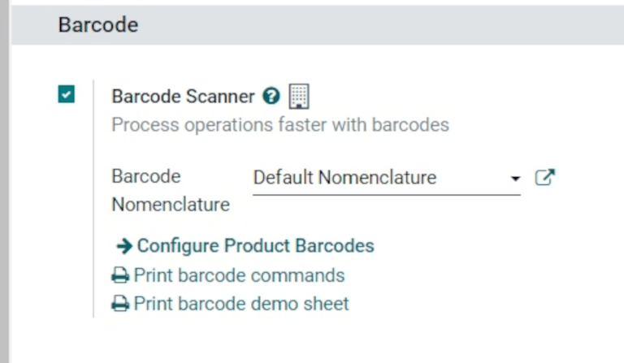
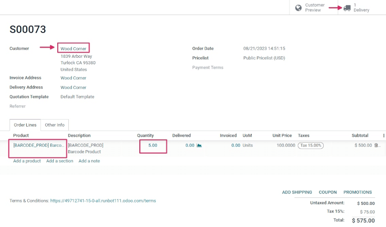
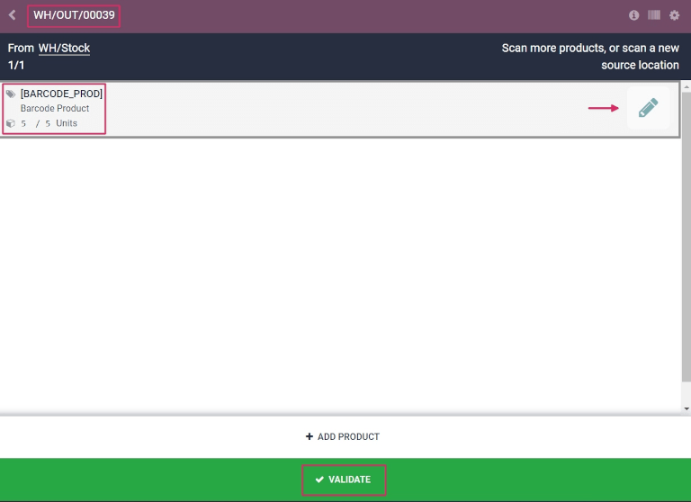

Process receipts and deliveries with barcodes¶
The Barcode app can be used to process receipts, deliveries, and other types of operations in real time using a barcode scanner or the Odoo mobile app.
This makes it possible to process operations on the warehouse floor when they happen, instead of having to wait to validate transfers from a computer. Processing operations this way can help to properly attribute barcodes to the appropriate products, pickings, locations, and more.
Enable Barcode app¶
To use the Barcode app to process transfers, it must be installed by enabling the feature from the settings of the Inventory app.
To do so, go to the . Then, scroll down to the Barcode section, and click the checkbox next to the Barcode Scanner feature.
Once the checkbox is ticked, click Save at the top of the page to save changes.
Once the page has refreshed, new options will be displayed under the Barcode Scanner feature: Barcode Nomenclature (with a corresponding drop-down menu), where either Default Nomenclature or Default GS1 Nomenclature can be selected.
There is also a Configure Product Barcodes internal link arrow, and a set of Print buttons for printing barcode commands and a barcode demo sheet.
For more on setting up and configuring the Barcode app, refer to the Set up your barcode scanner and Activate the Barcodes in Odoo documentation pages.
Scan barcodes for receipts¶
To process warehouse receipts for incoming products, there first needs to be a purchase order (PO) created, and a receipt operation to process.
To create a PO, navigate to the to create a new request for quotation (RFQ).
From the blank RFQ form, click the drop-down menu next to the Vendor field to add a vendor. Then, on the Product line under the Products tab, click Add a product, and select the desired product(s) to add to the quotation.
Once ready, click Save at the top of the form, then click Confirm Order to confirm the RFQ to a PO.

To process and scan barcodes for warehouse receipts, navigate to the .
Once inside the Barcode app, a Barcode Scanning screen displaying different options is presented. To process receipts, click on the Operations button at the bottom of the screen. This navigates to an overview page.

From this page, locate the Receipts card, and click the # To Process button to view all outstanding receipts. Then, select the desired receipt operation to process. This navigates to the barcode transfer screen.
Note
If only using a barcode scanner or the Odoo mobile app, the barcodes for each transfer of a corresponding operation type can be scanned to be processed easily. Once scanned, the products that are part of an existing transfer can be scanned, and new products can be added to the transfer, as well. Once all products have been scanned, validate the transfer to proceed with the stock moves.
From this screen, an overview of all receipts to process within that transfer (WH/IN/000XX) is shown. At the bottom of the screen, there are options to Add Product or Validate, depending on if products need to be added to the operation, or if the whole operation should be validated at once.

To process and scan each product individually, choose a specific product line. The +# button (in this case, +10) can be clicked to indicate receipt of that product, or the pencil icon can be clicked to open a new screen to edit that product line.
From this screen, the product that’s being received is listed. Under the product name, the
Quantity line can be edited. Either change the 0 in the line to the desired quantity,
or click the /# Units button (in this case, /10 Units) to automatically fill
the quantity ordered from the PO.
Example
In the reception operation WH/IN/00019, 10 Units of the Barcode Product is expected to be
received. [BARCODE_PROD] is the Internal Reference set on the product form. Scan
the barcode of the Barcode Product to receive one unit. Afterwards, click the
pencil icon to manually enter the received quantities.

Additionally, the +1 and -1 buttons can be clicked to add or subtract quantity of the product, and the number keys can be used to add quantity, as well.
Below the number keys is the location line, which reads WH/Stock by
default, unless another location is listed on the product itself. Click this line to reveal a
drop-down menu of additional locations to choose from.
Once ready, click Confirm to confirm the changes made to the product line.
Then, from the overview page with all receipts to process within that transfer (WH/IN/000XX), click the +# button on the product line for the products being received, and click Validate. The receipt has now been processed, and the Barcode app can be closed out.

Scan barcodes for delivery orders¶
To process warehouse deliveries for outgoing products, there first needs to be a sales order (SO) created, and a delivery operation to process.
To create a SO, navigate to the to create a new quotation.
From the blank quotation form, click the drop-down menu next to the Customer field to add a customer. Then, on the Product line under the Order Lines tab, click Add a product, and select the desired product(s) to add to the quotation.
Once ready, click Save at the top of the form, and click Confirm Order to confirm the quotation to a SO.
To process and scan barcodes for warehouse deliveries, navigate to the .
Once inside the Barcode app, a Barcode Scanning screen displaying different options is presented. To process deliveries, click on the Operations button at the bottom of the screen. This navigates to an Operations overview page.
From this page, locate the Delivery Orders card, and click the # To Process button to view all outstanding deliveries. Then, select the desired delivery order to process. This navigates to the barcode transfer screen.

From this screen, an overview of all deliveries to process within that transfer (WH/OUT/000XX) is shown. At the bottom of the screen, there are options to Add Product or Validate, depending on if products need to be added to the operation, or if the whole operation should be validated at once.
To process and scan each product individually, choose a specific product line. The +1 button can be clicked to indicate delivery of that product, or the pencil icon can be clicked to open a new screen to edit that product line.
From this screen, the product that’s being delivered is listed. Under the product name, the
Quantity line can be edited. Either change the 0 in the line to the desired quantity,
or click the /# Units button (in this case, /10 Units) to automatically fill
the quantity ordered from the SO.
Additionally, the +1 and -1 buttons can be clicked to add or subtract quantity of the product, and the number keys can be used to add quantity, as well.
Below the number keys is the location line, which reads WH/Stock by
default, unless another location is listed on the product itself.
This is the location that the product is being pulled from for delivery. Click this line to reveal a drop-down menu of additional locations to choose from (if this product is stored in multiple locations in the warehouse).
Tip
For warehouses that have multiple different storage locations, putaway rules, and removal strategies, additional steps can be added for various operation types, while using the Barcode app.
Once ready, click Confirm to confirm the changes made to the product line.
Then, from the overview page with all receipts to process within that transfer (WH/OUT/000XX), click the +# button on the product line for the products being received, and click Validate. The delivery has now been processed, and the Barcode app can be closed out.
